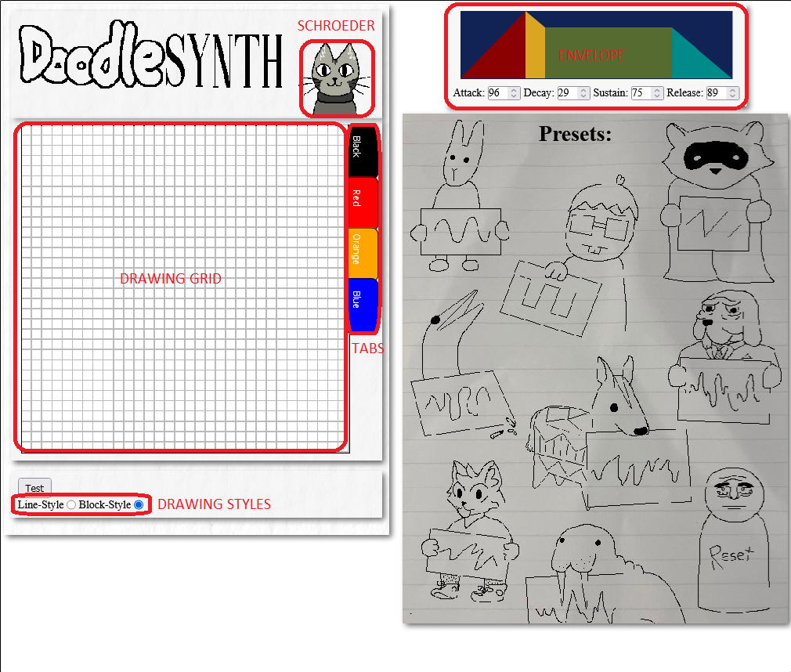
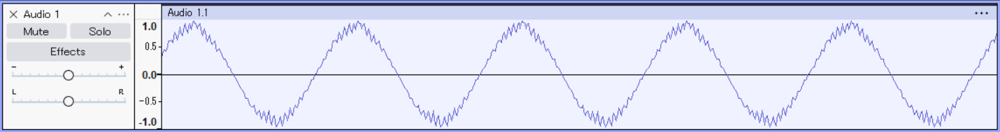

This page will help you understand (and hopefully appreciate) how DoodleSynth and digital audio works. I came up with the idea a while ago after watching a video on the Nintendo LABBO. One of the constructions was a keyboard with different "presets", made by inserting a cardboard "waveform" into the top. As I learned about forms of synthesis, I couldn't find anything that quite replicated the way I first learned how to think about audio: as visual waves you could "draw". So grab a snack and a glass of orange juice because here we go!
The quickest way to play: Click a preset and play using the keyboard rows qwerty and asdf for black and white keys, respectfully. The keys z and x can be used to increase and decrease the octave
Think of DoodleSynth as a set of 4 colors played simultaneously. Switch between them using the tabs on the side of the grid. Each color has its own ADSR envelope ADSR stands for attack, decay, sustain and release, and allows for different waves to fade in and out at different times. Below is an illustration of how sound is generated. A buffer, a series of amplitudes is created, and looped as the key is pressed. thus a sine wav at the correct frequency is created.
Note that this process is the reason some notes sound out of tune (especially high Es.) The equation I use to get frequencies from note is not equal temperment, which gives it a nice vintage synth feel. IDK I just like it.
Rule of thumb: a wave that is twice as fast will be an octave higher. Try fitting two identical shapes into the grid, alongside a different color with the usual frequency.
Hmmm.......
COOL STUFF FROM THE GOAT!!